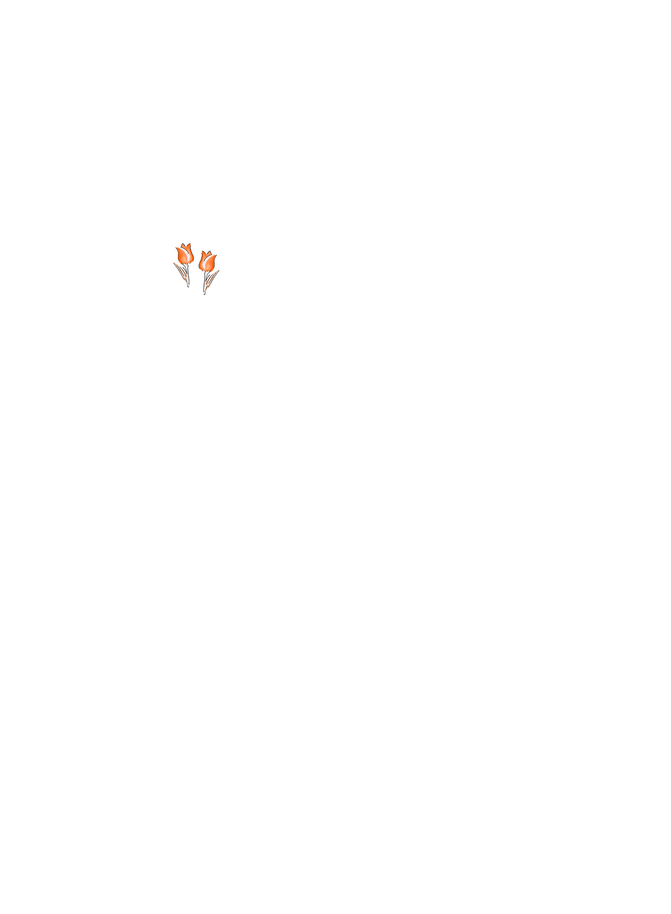

Brazilian Citizen Labs
For my master's thesis, I focused on citizen innovation laboratories and other technocultural initiatives in Brazil, mapping organizations across: CIVICS, Fablabs.io, Garoa Hacker Clube, and Hackerspaces.org.
This research explores how citizen labs, fab labs, and hackerspaces foster collaborative participation in digital design and contribute to the democratization of technology, with close attention to their organizational dynamics, funding models, and relationships with public and private institutions, and civil society.
(I also wrote about this mapping exercise and the data gathered on my Substack newsletter.)
(I built a visualization platform to make that data easier to explore.)
